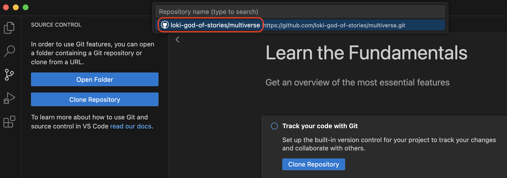
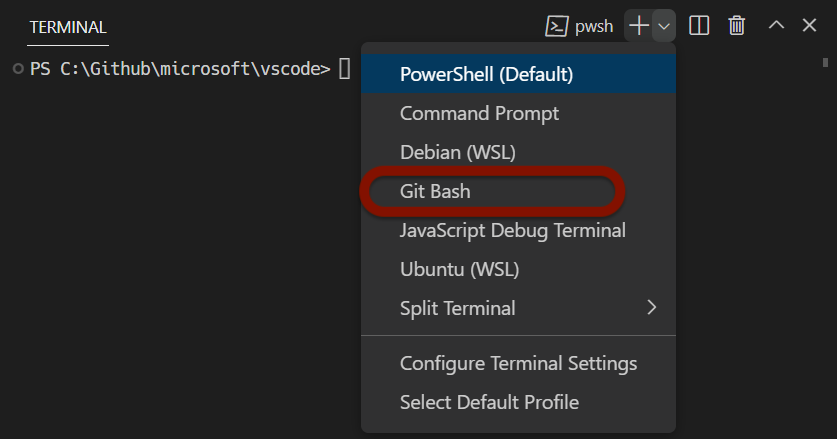
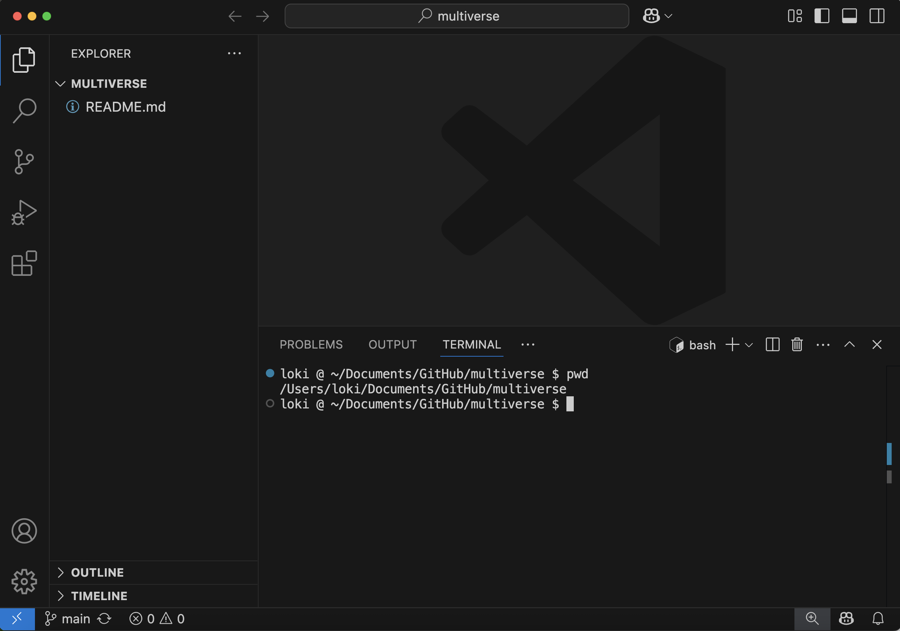
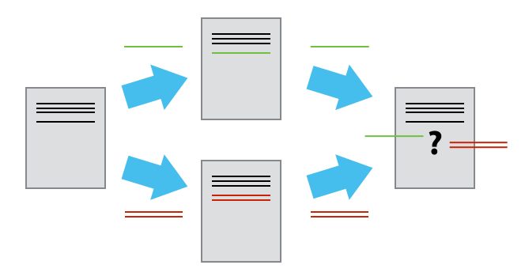
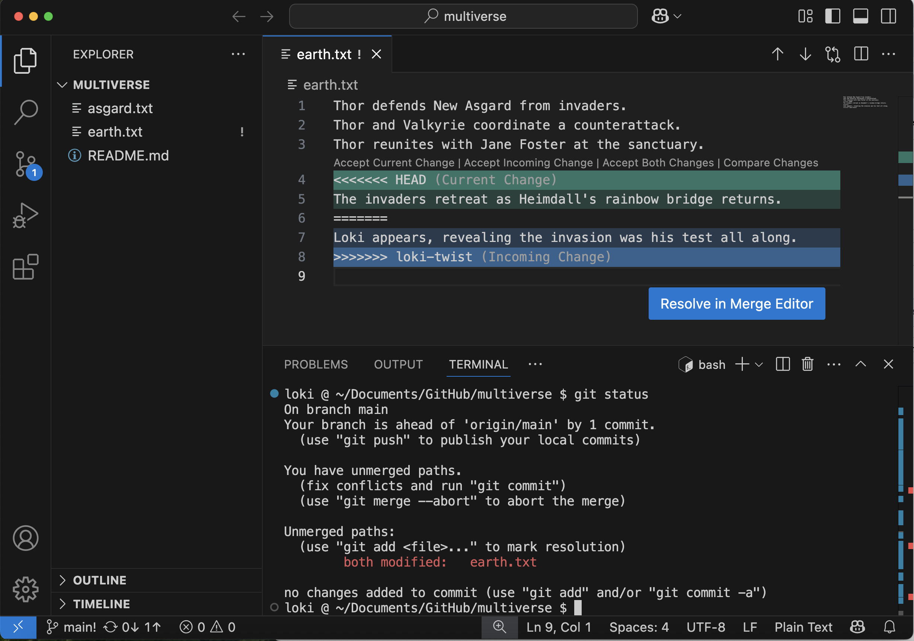
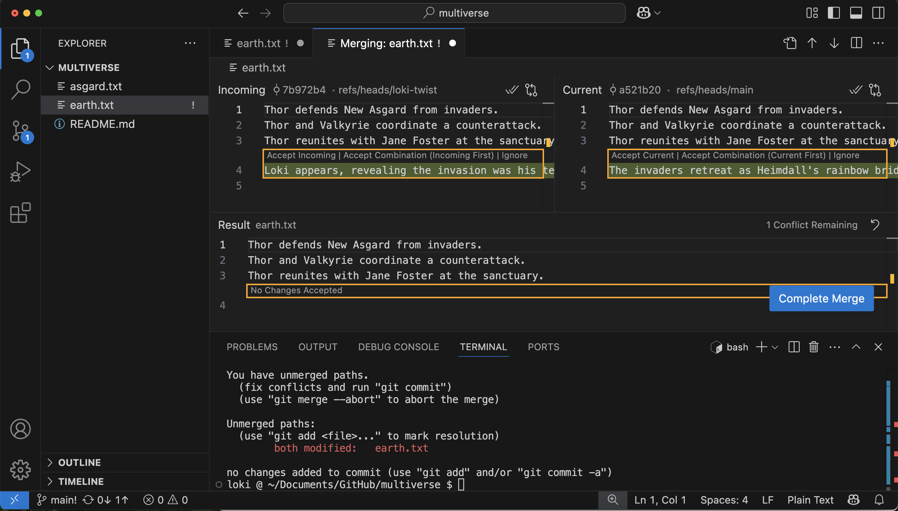
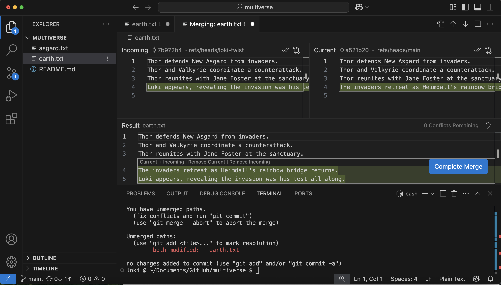

All in One View
Content from Setup Instructions
Last updated on 2026-08-10 | Edit this page
Estimated time: 0 minutes
Overview
Questions
- What software do I need to have installed?
- Do I have a GitLab account?
Objectives
- Install VS Code and other needed software
- Connect VS Code to code.ornl.gov
If you are participating in this workshop remotely (e.g. over Zoom), it is highly recommended that you use two screens: 1 screen with the remote meeting, to see the instructor sharing their screen, and 1 screen with your applications. You will need to have VS Code and a web browser open to https://code.ornl.gov in order to follow along.
Software Installations
Visual Studio Code
If you are new to using VS Code, you can review this Getting Started guide.
Git
You must have Git installed on your local computer. Typically, Mac and Linux computers come pre-installed with git, while Windows users must install GitBash (Git for Windows). However, you should verify that Git is installed on your computer.
You can verify git is installed by opening a command line application (e.g. Terminal) and typing:
If you see an error message stating git is an unknown command, you will need to install git.
If you do not already have git installed, you can refer to this GitHub guide on installing git for any OS.
Bash
You should have a Bash terminal. If you are on a Windows, you will have a Bash terminal by virtue of installing Git for Windows (GitBash). If you are on a Mac or Linux, you will already have a Bash terminal. If you prefer, you can use a similar terminal like Zsh.
Rather than using a seperate command line application, you will be using the Terminal in VS Code. To learn more about using the Terminal in VS Code, refer to these docs.
Connect VS Code to code.ornl.gov
Please refer to these instructions to sign in to GitLab from VS Code. Note that for the GitLab instance, you must use https://code.ornl.gov.
- GitHub, VS Code, bash, and git are needed for this lesson
Content from Introduction to Git & GitLab
Last updated on 2026-07-27 | Edit this page
Estimated time: 10 minutes
Overview
Questions
- What is Git?
- What is GitLab?
Objectives
- recognize why version control is useful
- distinguish between Git and GitLab
When the workshop begins, you should be sharing your screen, and instruct the learners to make sure their setup looks like yours:
- A new VS Code window is open (taking up the left 75% of the screen)
- A browser window with https://code.ornl.gov is open (taking up the right 75% of the screen)
Instruct learners to sign in to GitLab if they have not already.
In your browser window, you can have a second tab open with all images for this workshop, available at this URL
What is Version Control?
Version control is a name used for software which can help you record changes you make to the files in a directory on your computer. Version control software and tools (such as Git and Subversion/SVN) are often associated with software development, and increasingly, they are being used to collaborate in research and academic environments. Version control systems work best with plain text files such as documents or computer code, but modern version control systems can be used to track changes in most types of file.
At its most basic level, version control software helps us register and track sets of changes made to files on our computer. We can then reason about and share those changes with others. As we build up sets of changes over time, we begin to see some benefits.
Benefits of using version control?
- Collaboration - Version control allows us to define formalized ways we can work together and share writing and code. For example merging together sets of changes from different parties enables co-creation of documents and software across distributed teams.
- Versioning - Having a robust and rigorous log of changes to a file, without renaming files (v1, v2, final_copy)
- Rolling Back - Version control allows us to quickly undo a set of changes. This can be useful when new writing or new additions to code introduce problems.
- Understanding - Version control can help you understand how the code or writing came to be, who wrote or contributed particular parts, and who you might ask to help understand it better.
- Backup - While not meant to be a backup solution, using version control systems mean that your code and writing can be stored on multiple other computers.
There are many more reasons to use version control, and we’ll explore some of these in the library context, but first let’s learn a bit about a popular version control tool called Git.

“Piled Higher and Deeper” by Jorge Cham, http://www.phdcomics.com
What are Git and GitLab?
We often hear the terms Git and GitLab used interchangeably but they are slightly different things.
Git is one of the most widely used version control systems in the world. It is a free, open source tool that can be downloaded to your local machine and used for logging all changes made to a group of designated computer files (referred to as a “git repository” or “repo” for short) over time. It can be used to control file versions locally by you alone on your computer, but is perhaps most powerful when employed to coordinate simultaneous work on a group of files shared among distributed groups of people.
Rather than emailing documents with tracked changes and some comments and renaming different versions of files (example.txt, exampleV2.txt, exampleV3.txt) to differentiate them, we can use Git to save (or in Git parlance, “commit”) all that information with the document itself. This makes it easy to get an overview of all changes made to a file over time by looking at a log of all the changes that have been made. And all earlier versions of each file still remain in their original form: they are not overwritten, should we ever wish to “roll back” to them.
Git was originally developed to help software developers work collaboratively on software projects, but it can be and is used for managing revisions to any file type on a computer system, including text documents and spreadsheets. Once installed, interaction with Git is done through the Command Prompt in Windows, or the Terminal on Mac/Linux. Since Word documents contain special formatting, Git unfortunately cannot version control those, nor can it version control PDFs, though both file types can be stored in Git repositories.
GitLab on the other hand is a popular software for hosting and sharing Git repositories remotely. It offers a web interface and provides functionality and a mixture of both free and paid services for working with such repositories. The majority of the content that GitLab hosts is open source software, though increasingly it is being used for other projects such as open access journals (e.g. Journal of Open Source Software), blogs, and regularly updated text books. In addition to GitLab, there are other Git hosting services that offer many similar features such as GitHub, Bitbucket and Gitee.
Visualizing Git
Version control systems start with a base version of the document and then save just the changes you made at each step of the way. You can think of it as a tape: if you rewind the tape and start at the base document, then you can play back each change and end up with your latest version.

Once you think of changes as separate from the document itself, you can then think about “playing back” different sets of changes onto the base document and getting different versions of the document. For example, two users can make independent sets of changes based on the same document.

Unless there are conflicts, you can even play two sets of changes onto the same base document.

Git terminology
One of the main barriers to getting started with Git is understanding the terminology necessary to executing commands. Although some of the language used in Git aligns with common-use words in English, other terms are not so clear. The best way to learn Git terminology - which consists of a number of verbs such as add, commit and push (preceded by the word ‘git’) - is to use it, which is what we will be doing during this lesson. We will explain these commands as we proceed from setting up a new version-controlled project to publishing our own website.
On a command line interface, Git commands are written as
git verb options, where verb is what we
actually want to do and options is additional optional
information which may be needed for the verb.
- Version control helps track changes to files and projects
- Git and GitLab are not the same
- Git commands are written as
git verb options
Content from Create a GitLab Repository
Last updated on 2026-07-27 | Edit this page
Estimated time: 10 minutes
Overview
Questions
- How do I create a new repository on GitLab?
- How do I clone the repository to my local computer?
Objectives
- Create
multiverserepository on GitLab - Clone the
multiverserepository using VS Code
When the workshop begins, you should be sharing your screen, and instruct the learners to make sure their setup looks like yours:
- A new VS Code window is open (taking up the left 75% of the screen)
- A browser window with https://code.ornl.gov is open (taking up the right 75% of the screen)
In your browser window, you can have a second tab open with all images for this workshop, available at this URL
Create a new repo on GitLab
The first thing we need to do is create a new repository. While you can create repositories locally, and never even connect the local repo to a remote repo (hosted on a site like GitLab), the simplist and most common pattern to first create a new repo on GitLab, and then clone that repo to your local computer.
You should already be signed in to GitLab. You can create a new repo from anywhere on the site by clicking on the “+” icon in the upper right, and then clicking “New project/repository”:
Select “Create a blank project”
Type multiverse for the project name.
Under “Project URL”, select your username as the owner.
Leave all other options as the default - your repo should be private and initialized with a README.
Finally, click the blue “Create project” button at the bottom.
You will be redirected to your newly created and empty
multiverse repo.
Clone your multiverse repo to your local computer
Now that the multiverse repo has been created, we can
“clone” it (get a local copy of the repo) through VS Code.
Make sure you have a new VS Code window open. If you already have a repo/folder open in VS Code, go to the “File” menu and click “New window”.
In your new VS Code window, go to the “Source Control” pane (the 3rd one down). Click “Clone Repository”, and then click “Clone from GitLab”.
If you don’t immediately see your multiverse repo, you
can search for it by typing “multiverse” in the search box. When you see
your multiverse repo (it should have your username in the
URL), click it.

You will now need to choose where on your local computer the
multiverse repo will live. You can choose any easily
accessible location, such as the “Desktop” folder. It is standard
practice to save all local repos in a folder named “GitLab” in your
“Documents” folder.
Click “Open” when prompted to open the newly cloned
multiverse repo.
Open a Bash Terminal in VS Code
Now that you have your multiverse repo cloned and open
in VS Code, the last step is to open a bash terminal.
To see the terminal pane, go to the “Terminal” menu, and click “New terminal”.
If you are on a Windows computer, you will need to specifically open a GitBash terminal. Find the “+” icon in the terminal pane, and click the carrot dropdown icon next to it. Click “GitBash”.

If you are on a Mac or Linux computer, your default terminal should be sufficient. You can also choose to open a Bash terminal by following the same instructions.
You should now have your empty multiverse repo open,
with a Bash terminal open, and you are ready to start typing your first
git commands!

- Create a new repository on GitLab
- Clone the repository to your local computer
- Open the terminal in VS Code
Content from Setup Git Configs
Last updated on 2026-07-27 | Edit this page
Estimated time: 10 minutes
Overview
Questions
- How do I first set up Git?
Objectives
- set up basic configs for Git
Setting up Git
When we use Git on a new computer for the first time, we need to configure a few things. Some basic configurations to set for Git are:
- your name
- your email address,
- your preferred text editor
To start we will check in on our current Git configuration. Open your shell terminal window and type:
On MacOS, without any configuration your output might look like this:
OUTPUT
credential.helper=osxkeychainOn Windows, without any configuration your output might look like this:
OUTPUT
diff.astextplain.textconv=astextplain
filter.lfs.clean=git-lfs clean -- %f
filter.lfs.smudge=git-lfs smudge -- %f
filter.lfs.process=git-lfs filter-process
filter.lfs.required=true
http.sslbackend=openssl
http.sslcainfo=C:/Program Files/Git/mingw64/ssl/certs/ca-bundle.crt
core.autocrlf=true
core.fscache=true
core.symlinks=false
pull.rebase=false
credential.helper=manager-core
credential.https://dev.azure.com.usehttppath=true
init.defaultbranch=mainIf you have different output, then you may have your Git configured already. If you have not configured Git, we will do that together now.
First, we will tell Git our user name and email.
Please note: You need to use the same email address in your Git configuration in the shell as you entered into GitLab when you signed in. Later in the lesson we will be using GitLab and the email addresses need to match.
Type these two commands into your shell, using your own name and email:
BASH
$ git config --global user.name "Loki Odinson"
$ git config --global user.email "loki.odinson@tva.org"If you enter the commands correctly, the shell will merely return a command prompt and no messages. To check your work, ask Git what your configuration is using the same command as above:
Let’s also set our default text editor. A text editor is necessary
with some of your Git work, and the default from Git is Vim, which is a
text editor that is hard to learn at first. Since we are using VS Code
for this lesson, we will set the default editor to code.
You can feel free to change this at a later time.
OUTPUT
user.name=Loki Odinson
user.email=loki.odinson@tva.org
core.editor=code --waitLine Endings
As with other keys, when you hit the ‘return’ key on your keyboard, your computer encodes this input. For reasons that are long to explain, different operating systems use different character(s) to represent the end of a line. (You may also hear these referred to as newlines or line breaks.) Because git uses these characters to compare files, it may cause unexpected issues when editing a file on different machines.
You can change the way git recognizes and encodes line endings using
the core.autocrlf command to git config. The
following settings are recommended:
On OS X and Linux:
And on Windows:
You can read more about this issue on this GitHub page.
Default Git branch naming
Source file changes are associated with a “branch.” By default, Git
will create a branch called master when you create a new
repository with git init. This term evokes the racist
practice of human slavery and the software development
community has moved to adopt more inclusive language.
In 2020, most Git code hosting services transitioned to using
main as the default branch. As an example, any new
repository that is opened in GitHub and GitLab default to
main. However, Git has not yet made the same change. As a
result, local repositories must be manually configured have the same
main branch name as most cloud services.
For versions of Git prior to 2.28, the change can be made on an
individual repository level. Note that if this value is unset in your
local Git configuration, the init.defaultBranch value
defaults to master.
Since we are creating the repository on GitLab, the default branch
name for the multiverse repo will be main.
Configure this setting if you plan on creating git repositories locally
first.
- Version control helps track changes to files and projects
- Git and GitLab are not the same
- Git commands are written as
git verb options - When we use Git on a new computer for the first time, we need to configure a few things
Content from Tracking Changes
Last updated on 2026-07-27 | Edit this page
Estimated time: 20 minutes
Overview
Questions
- How do I record changes in Git?
- How do I check the status of my version control repository?
- How do I record notes about what changes I made and why?
Objectives
- Go through the modify-add-commit cycle for one or more files.
- Explain where information is stored at each stage of that cycle.
- Distinguish between descriptive and non-descriptive commit messages.
Loki writes a story about Thor in New Asgard
Loki, in his role as God of Stories, oversees the many branching
timelines in the multiverse. But even an infinitely clever being like
Loki has trouble keeping track of all of the events across the
multiverse. Fortunately, there is a tool that can help keep track of
these events across different timeline branches: git! Loki has decided
to start logging events in a git repository named
multiverse. Each planet will have their own file. Loki
starts recording the events of New Asgard on Earth, where his brother
Thor lives.
Create a file
First let’s make sure we’re in the right directory. You should be in
the multiverse directory.
Let’s create a file called earth.txt to start recording
the events taking place on the planet Earth.
Make sure you have the Explorer pane open in VS Code, and
click the “New File” button. Name the file
earth.txt.
Type the text below into the earth.txt file:
OUTPUT
Thor defends New Asgard from invaders.
Make sure to end the file with a newline!
Save the file.
Track Changes to the File
If we check the status of our project again, Git tells us that it’s noticed the new file:
OUTPUT
On branch main
Your branch is up to date with 'origin/main'.
Untracked files:
(use "git add <file>..." to include in what will be committed)
earth.txt
nothing added to commit but untracked files present (use "git add" to track)The “untracked files” message means that there’s a file in the
directory that Git isn’t keeping track of. We can tell Git to track a
file using git add:
and then check that the right thing happened:
OUTPUT
On branch main
Your branch is up to date with 'origin/main'.
Changes to be committed:
(use "git restore --staged <file>..." to unstage)
new file: earth.txtGit now knows that it’s supposed to keep track of
earth.txt, but it hasn’t recorded these changes as a commit
yet. To get it to do that, we need to run one more command:
OUTPUT
[main 9b26458] Start story for New Asgard in earth.txt
1 file changed, 1 insertion(+)
create mode 100644 earth.txtWhen we run git commit, Git takes everything we have
told it to save by using git add and stores a copy
permanently inside the special .git directory. This
permanent copy is called a commit (or revision) and its short identifier
is 9b26458 (Your commit will have another identifier.)
We use the -m flag (for “message”) to record a short,
descriptive, and specific comment that will help us remember later on
what we did and why. If we just run git commit without the
-m option, Git will launch a VS Code window (or whatever
other editor we configured as core.editor) so that we can
write a longer message.
Good commit messages start with a brief (<50 characters) summary of changes made in the commit. If you want to go into more detail, add a blank line between the summary line and your additional notes.
If we run git status now:
OUTPUT
On branch main
Your branch is ahead of 'origin/main' by 1 commit.
(use "git push" to publish your local commits)
nothing to commit, working tree cleanIt tells us everything is up to date. If we want to know what we’ve
done recently, we can ask Git to show us the project’s history using
git log:
OUTPUT
commit 9b26458f5d229d48be61023bcb510f8beb3f13db (HEAD -> main)
Author: Loki Odinson <loki.odinson@tva.org>
Date: Sat May 17 20:18:55 2025 -0400
Start story for New Asgard in earth.txt
commit f537d84c6ef9b6d988f642400b2017f855f9aaa1 (origin/main, origin/HEAD)
Author: Loki Odinson <loki.odinson@tva.org>
Date: Sat May 17 18:34:45 2025 -0400
Initial commitgit log lists all commits made to a repository in
reverse chronological order. The listing for each commit includes the
commit’s full identifier (which starts with the same characters as the
short identifier printed by the git commit command
earlier), the commit’s author, when it was created, and the log message
Git was given when the commit was created
Make more changes to the file
Now suppose Loki records another event in the file.
Click back into the earth.txt file, and add a second
line:
OUTPUT
Thor defends New Asgard from invaders.
Thor and Valkyrie coordinate a counterattack.
Save the file (make sure to have a newline at the end!).
When we run git status now, it tells us that a file it
already knows about has been modified:
OUTPUT
On branch main
Your branch is ahead of 'origin/main' by 1 commit.
(use "git push" to publish your local commits)
Changes not staged for commit:
(use "git add <file>..." to update what will be committed)
(use "git restore <file>..." to discard changes in working directory)
modified: earth.txt
no changes added to commit (use "git add" and/or "git commit -a")The last line is the key phrase: “no changes added to commit”. We
have changed this file, but we haven’t told Git we will want to save
those changes (which we do with git add) nor have we saved
them (which we do with git commit). So let’s do that now.
It is good practice to always review our changes before saving them. We
do this using git diff. This shows us the differences
between the current state of the file and the most recently saved
version:
OUTPUT
diff --git a/earth.txt b/earth.txt
index 0b592c6..d27fc77 100644
--- a/earth.txt
+++ b/earth.txt
@@ -1 +1,2 @@
Thor defends New Asgard from invaders.
+Thor and Valkyrie coordinate a counterattack.The output is cryptic because it is actually a series of commands for
tools like editors and patch telling them how to
reconstruct one file given the other. If we break it down into
pieces:
- The first line tells us that Git is producing output similar to the
Unix
diffcommand comparing the old and new versions of the file. - The second line tells exactly which versions of the file Git is
comparing;
0b592c6andd27fc77are unique computer-generated labels for those versions. - The third and fourth lines once again show the name of the file being changed.
- The remaining lines are the most interesting, they show us the
actual differences and the lines on which they occur. In particular, the
+marker in the first column shows where we added a line.
After reviewing our change, it’s time to commit it:
OUTPUT
On branch main
Your branch is ahead of 'origin/main' by 1 commit.
(use "git push" to publish your local commits)
Changes not staged for commit:
(use "git add <file>..." to update what will be committed)
(use "git restore <file>..." to discard changes in working directory)
modified: earth.txt
no changes added to commit (use "git add" and/or "git commit -a")Whoops: Git won’t commit because we didn’t use git add
first. Let’s fix that:
OUTPUT
[main ee67c8b] Implement counterattack strategy
1 file changed, 1 insertion(+)Git insists that we add files to the set we want to commit before actually committing anything. This allows us to commit our changes in stages and capture changes in logical portions rather than only large batches.
To allow for this, Git has a special staging area where it keeps track of things that have been added to the current changeset but not yet committed.
If you think of Git as taking snapshots of changes over the life of a
project, git add specifies what will go in a
snapshot (putting things in the staging area), and
git commit then actually takes the snapshot, and
makes a permanent record of it (as a commit). If you don’t have anything
staged when you type git commit, Git will prompt you to use
git commit -a or git commit --all, which is
kind of like gathering everyone for the picture! However, it’s
almost always better to explicitly add things to the staging area,
because you might commit changes you forgot you made. (Going back to
snapshots, you might get the extra with incomplete makeup walking on the
stage for the snapshot because you used -a!) Try to stage
things manually, or you might find yourself searching for “git undo
commit” more than you would like!

Using the Source Control pane in VS Code
Let’s watch as our changes to a file move from our editor to the staging area and into long-term storage. First, we’ll add another line to the file:
OUTPUT
Thor defends New Asgard from invaders.
Thor and Valkyrie coordinate a counterattack.
Thor reunites with Jane Foster at the sanctuary.
Save the file (with a newline at the end!).
Switch from the Explorer pane view to the Source Control pane view in VS Code.
Under “Changes”, you should see your earth.txt file.
Click the file.
In your Terminal window, type the command:
OUTPUT
diff --git a/earth.txt b/earth.txt
index d27fc77..8938f14 100644
--- a/earth.txt
+++ b/earth.txt
@@ -1,2 +1,3 @@
Thor defends New Asgard from invaders.
Thor and Valkyrie coordinate a counterattack.
+Thor reunites with Jane Foster at the sanctuary.The git diff command is accomplishing the same thing as
clicking on the file under “Changes”: that we’ve added one line to the
end of the file (shown with a + in the first column).
In the Source Control pane, click the + icon next to the
earth.txt file. The earth.txt file gets moved
to the “Saved Changes” section.
Clicking the + icon accomplished the same thing as
typing git add earth.txt in the terminal.
Now, let’s save our changes. We could use the Terminal to commit our changes:
OUTPUT
[main 2f2d364] Complete story with Thor-Jane reunion
1 file changed, 1 insertion(+)Or, we can type the commit message “Complete story with Thor-Jane reunion” in the “Message” box and click “Commit”.
Let’s check our status:
OUTPUT
On branch main
Your branch is ahead of 'origin/main' by 3 commits.
(use "git push" to publish your local commits)
nothing to commit, working tree cleanand look at the history of what we’ve done so far:
OUTPUT
commit 2f2d364f559efb1101647591d9fbf2cc30ade8bb (HEAD -> main)
Author: Loki Odinson <loki.odinson@tva.org>
Date: Sat May 17 20:29:51 2025 -0400
Complete story with Thor-Jane reunion
commit ee67c8b551612e09be46c97726866d04c7b0d785
Author: Loki Odinson <loki.odinson@tva.org>
Date: Sat May 17 20:24:35 2025 -0400
Implement counterattack strategy
commit 9b26458f5d229d48be61023bcb510f8beb3f13db
Author: Loki Odinson <loki.odinson@tva.org>
Date: Sat May 17 20:18:55 2025 -0400
Start story for New Asgard in earth.txt
commit f537d84c6ef9b6d988f642400b2017f855f9aaa1 (origin/main, origin/HEAD)
Author: Loki Odinson <loki.odinson@tva.org>
Date: Sat May 17 18:34:45 2025 -0400
Initial commitChallenge
Look back at the Source Control pane. Where can you see a GUI representation of this log?
-
git statusshows the status of a repository. - Files can be stored in a project’s working directory (which users see), the staging area (where the next commit is being built up) and the local repository (where commits are permanently recorded).
-
git addputs files in the staging area. -
git commitsaves the staged content as a new commit in the local repository. - Always write a log message when committing changes.
Content from Pushing changes to GitLab
Last updated on 2026-07-27 | Edit this page
Estimated time: 10 minutes
Overview
Questions
- How do I share my changes with others on the web?
Objectives
- Push to or pull from a remote repository.
Local vs Remote Repositories
Version control really comes into its own when we begin to collaborate with other people. We already have most of the machinery we need to do this; the only thing missing is to copy changes from one repository to another.
Systems like Git allow us to move work between any two repositories. In practice, though, it’s easiest to use one copy as a central hub, and to keep it on the web rather than on someone’s laptop. Most programmers use hosting services like GitHub, Bitbucket or GitLab to hold those main copies; we’re using GitLab.
Before we share our changes, let’s first look at our
multiverse repo on GitLab.
Even though we have made changes to our local copy of
multiverse, the remote copy on GitLab still only has the
README file. This is because we have not yet “pushed” our changes (or
commits) to the remote repository.
Note that our local repository still contains our earlier work on
earth.txt, but the remote repository on GitLab only
contains the README file.
Because we created our repo on GitLab first and then cloned it to our local computer, the two repositories are already connected. If we had instead created the local repo first, then the remote repo on GitLab, we would need to manually connect the two repos, with a commmand like:
origin is a local name used to refer to the remote
repository. It could be called anything, but origin is a
convention that is often used by default in git and GitLab, so it’s
helpful to stick with this unless there’s a reason not to.
Instead, we can simply verify that the two repositories are connected with the command:
OUTPUT
origin https://github.com/loki-god-of-stories/multiverse.git (fetch)
origin https://github.com/loki-god-of-stories/multiverse.git (push)Pushing local changes to GitLab
This command will push the changes from our local repository to the repository on GitLab:
OUTPUT
Enumerating objects: 10, done.
Counting objects: 100% (10/10), done.
Delta compression using up to 8 threads
Compressing objects: 100% (8/8), done.
Writing objects: 100% (9/9), 992 bytes | 992.00 KiB/s, done.
Total 9 (delta 1), reused 0 (delta 0), pack-reused 0
remote: Resolving deltas: 100% (1/1), done.
To https://github.com/loki-god-of-stories/multiverse.git
f537d84..2f2d364 main -> mainWe can pull changes from the remote repository to the local one as well:
OUTPUT
From https://github.com/loki-god-of-stories/multiverse
* branch main -> FETCH_HEAD
Already up to date.Pulling has no effect in this case because the two repositories are already synchronized. If someone else had pushed some changes to the repository on GitLab, though, this command would download them to our local repository.
Let’s verify that our changes made it to GitLab: go to your browser window with the GitLab repo and refresh the page.
You should now see the earth.txt file. Click on
the file, and you can see the contents of the file are the same
as in VS Code.
Now click on the “History” link. You should see each commit made to the file, even though we only pushed once.
- A local Git repository can be connected to one or more remote repositories.
-
git pushcopies changes from a local repository to a remote repository. -
git pullcopies changes from a remote repository to a local repository.
Content from Branches
Last updated on 2026-07-27 | Edit this page
Estimated time: 15 minutes
Overview
Questions
- What are branches?
- How can I work in parallel using branches?
Objectives
- Understand why branches are useful for:
- working on separate tasks in the same repository concurrently
- trying multiple solutions to a problem
- check-pointing versions of code
- Merge branches back into the main branch
So far we’ve always been working in a straight timeline. However,
there are times when we might want to keep our main work safe from
experimental changes we are working on. To do this we can use branches
to work on separate tasks in parallel without changing our current
branch, main.
We didn’t see it before but the first branch made is called
main. This is the default branch created when initializing
a repository and is often considered to be the “clean” or “working”
version of a repository’s code.
We can see what branches exist in a repository by typing
OUTPUT
* mainThe ’*’ indicates which branch we are currently on.
In this lesson, Loki needs to track two possible branching timelines, with two different versions of events happening on Asgard. Only one of these timeline branches will become part of the “main” timeline. In one timeline, Heimdall, guardian of the bifrost bridge, is aware of the invasion in New Asgard. In another timeline, Heimdall is blinded by powerful magic and is unaware of any trouble in New Asgard.
First let’s make the branch where Heimdall is aware. We use the same
git branch command but now add the name we want to give our
new branch
We can now check our work with the git branch
command.
OUTPUT
heimdall-aware
* mainWe can see that we created the heimdall-aware branch but
we are still in the main branch.
We can also see this in the output of the git status
command.
OUTPUT
On branch main
nothing to commit, working directory cleanTo switch to our new branch we can use the switch
command and check our work with git branch.
OUTPUT
* heimdall-aware
mainThe git command switch is relatively new. You can also
use the command checkout. A few years ago, the git commands
switch and restore were introduced to
distinguish between the two different functions performed by
checkout. The checkout command is still
available for you to use if you prefer it.
We can use the checkout command to checkout a file from
a specific commit using commit hashes or HEAD and the
filename (git checkout HEAD <file>). The
checkout command can also be used to checkout an entire
previous version of the repository, updating all files in the repository
to match the state of a desired commit.
Branches allow us to do this using a human-readable name rather than
memorizing a commit hash. This name also typically gives purpose to the
set of changes in that branch. When we use the command
git checkout <branch_name>, we are using a nickname
to checkout a version of the repository that matches the most recent
commit in that branch (a.k.a. the HEAD of that branch).
Here you can use git log and ls to see that
the history and files are the same as our main branch. This
will be true until some changes are committed to our new branch.
OUTPUT
2f2d364 (HEAD -> heimdall-aware, origin/main, origin/HEAD, main) Complete story with Thor-Jane reunion
ee67c8b Implement counterattack strategy
9b26458 Start story for New Asgard in earth.txt
f537d84 Initial commitNow lets write what happens on Asgard.
Use the “New file” button to create a new file
called asgard.txt.
Add one line to this file (and make sure to end with a newline), and then save it:
OUTPUT
Heimdall watches from afar, aware of New Asgard's plight.Now we can add and commit the script to our branch.
BASH
$ git add asgard.txt
$ git commit -m "Create asgard.txt detailing Heimdall's awareness of invasion"OUTPUT
[heimdall-aware daf95c3] Create asgard.txt detailing Heimdall's awareness of invasion
1 file changed, 1 insertion(+)
create mode 100644 asgard.txtLets check our work!
OUTPUT
daf95c3 (HEAD -> heimdall-aware) Create asgard.txt detailing Heimdall's awareness of invasion
2f2d364 (origin/main, origin/HEAD, main) Complete story with Thor-Jane reunion
ee67c8b Implement counterattack strategy
9b26458 Start story for New Asgard in earth.txt
f537d84 Initial commitAs expected, we see our commit in the log.
Now let’s switch back to the main branch.
OUTPUT
heimdall-aware
* mainLet’s explore the repository a bit.
Now that we’ve confirmed we are on the main branch
again. Let’s confirm that asgard.txt and our last commit
aren’t in main.
OUTPUT
2f2d364 (HEAD -> main, origin/main, origin/HEAD) Complete story with Thor-Jane reunion
ee67c8b Implement counterattack strategy
9b26458 Start story for New Asgard in earth.txt
f537d84 Initial commitWe no longer see the file asgard.txt and our latest
commit doesn’t appear in this branch’s history. But do not fear! All of
our hard work remains in the heimdall-aware branch. We can
confirm this by moving back to that branch.
OUTPUT
* heimdall-aware
mainAnd we see that our asgard.txt file and respective
commit have been preserved in the heimdall-aware
branch.
Switch to the main branch again to prepare for creating
another new branch based on the version history in main. New branches
will include the entire history up to the current commit, and we’d like
to keep these two tasks separate.
OUTPUT
heimdall-aware
* mainNow we can keep track of a different timeline branching off from the main timeline.
This time let’s create and switch to the heimdall-blind
branch in one command.
We can do so by adding the -c flag to the switch
command.
OUTPUT
heimdall-aware
* heimdall-blind
mainWe can use git log to see that this branch is the same
as our current main branch.
OUTPUT
2f2d364 (HEAD -> heimdall-blind, origin/main, origin/HEAD, main) Complete story with Thor-Jane reunion
ee67c8b Implement counterattack strategy
9b26458 Start story for New Asgard in earth.txt
f537d84 Initial commitNow we can a file for Asgard again and write the different version of events. This time, let’s make a markdown file instead of a text file.
Use the “New File” button to create a new file
called asgard.md and add this line:
Heimdall's vision is blocked by *ancient magic*, unaware of New Asgard's danger.OUTPUT
[heimdall-blind 59b9bab] Create asgard.md describing Heimdall's blocked vision
1 file changed, 1 insertion(+)
create mode 100644 asgard.mdLets check our work again before we switch back to the main branch.
OUTPUT
59b9bab (HEAD -> heimdall-blind) Create asgard.md describing Heimdall's blocked vision
2f2d364 (origin/main, origin/HEAD, main) Complete story with Thor-Jane reunion
ee67c8b Implement counterattack strategy
9b26458 Start story for New Asgard in earth.txt
f537d84 Initial commitLoki decides the version of events where Heimdall is aware should be part of the main timeline.
We will merge the heimdall-aware branch into our
main branch via a Pull Request so we can use it for our
work going forward.
Before we can create a Merge Request on GitLab, we need to push this branch to the remote repo
Let’s switch to & push the heimdall-aware branch:
Whoops, we got an error:
OUTPUT
fatal: The current branch heimdall-aware has no upstream branch.
To push the current branch and set the remote as upstream, use
git push --set-upstream origin heimdall-aware
To have this happen automatically for branches without a tracking
upstream, see 'push.autoSetupRemote' in 'git help config'.While our main branch was already on both our local and remote repositories, our heimdall-aware branch is only on our local computer. You can check this by going to GitLab and searching for the heimdall-aware branch - you won’t find it!
We need to use the -u flag in our command and specify
the destination branch.
OUTPUT
Enumerating objects: 4, done.
Counting objects: 100% (4/4), done.
Delta compression using up to 8 threads
Compressing objects: 100% (3/3), done.
Writing objects: 100% (3/3), 406 bytes | 406.00 KiB/s, done.
Total 3 (delta 0), reused 0 (delta 0), pack-reused 0
remote:
remote: Create a pull request for 'heimdall-aware' on GitHub by visiting:
remote: https://github.com/loki-god-of-stories/multiverse/pull/new/heimdall-aware
remote:
To https://github.com/loki-god-of-stories/multiverse.git
* [new branch] heimdall-aware -> heimdall-aware
branch 'heimdall-aware' set up to track 'origin/heimdall-aware'.The ‘-u’ Flag
You may see a -u option used with git push
in some documentation. This option is synonymous with the
--set-upstream-to option for the git branch
command, and is used to associate the current branch with a remote
branch so that the git pull command can be used without any
arguments. To do this, simply use
git push -u origin <branch-name>.
Now, we can go back to GitLab and verify that we have a new branch named heimdall-aware.
- Branches can be useful for developing while keeping the main line static.
Content from Merge Requests
Last updated on 2026-07-27 | Edit this page
Estimated time: 15 minutes
Overview
Questions
- What are merge requests for?
- How can I make a merge request?
Objectives
- Define the terms fork, clone, origin, remote, upstream
- Understand how to make a merge request and what they are useful for
Merge requests are a great way to collaborate with others using GitLab. Instead of making changes directly to a repository you can suggest changes to a repo. This can be useful if you don’t have permission to modify a repository directly or you want someone else to review your changes.
On GitLab, in your multiverse repo, click on the
“Merge Requests” tab.
Then click “Create merge request”. Alternatively, GitLab will see your new branch with recent changes and will prompt you to create a Merge Request. Click this button to also be taken to the new merge request page.
Make sure that the “base” branch is main and the
“compare” branch is heimdall-aware.
Next, we need to give our PR a title. By default, your PR will get the title from your last commit. We can leave this as is.
Click “Compare branches and continue”.
Click “Create merge request”.
Your multiverse repo should now have 1 merge request.
This is the phase where you would normally request a reviewer, who can
leave comments on your code. In repos that you do not own, your PR will
need to be approved by a codeowner before you can merge it. Since you
are the codeowner, we can go ahead and click “Merge”.
Confirm & complete the merge.
Go back to the “Code” tab and make sure you are on the “main” branch. You should now see an “asgard.txt” file.
Let’s go back to VS Code. Switch to the main branch, and look at the files and history:
OUTPUT
2f2d364 (HEAD -> main, origin/main, origin/HEAD) Complete story with Thor-Jane reunion
ee67c8b Implement counterattack strategy
9b26458 Start story for New Asgard in earth.txt
f537d84 Initial commitThe analysis file is not on “main” yet. This is because we need to first pull the changes we made with the Merge Request from the remote repository.
OUTPUT
remote: Enumerating objects: 1, done.
remote: Counting objects: 100% (1/1), done.
remote: Total 1 (delta 0), reused 0 (delta 0), pack-reused 0 (from 0)
Unpacking objects: 100% (1/1), 952 bytes | 476.00 KiB/s, done.
From https://github.com/loki-god-of-stories/multiverse
2f2d364..976b48e main -> origin/main
Updating 2f2d364..976b48e
Fast-forward
asgard.txt | 1 +
1 file changed, 1 insertion(+)
create mode 100644 asgard.txt$ git log --onelineOUTPUT
976b48e (HEAD -> main, origin/main, origin/HEAD) Merge pull request #1 from loki-god-of-stories/heimdall-aware
daf95c3 (origin/heimdall-aware, heimdall-aware) Create asgard.txt detailing Heimdall's awareness of invasion
2f2d364 Complete story with Thor-Jane reunion
ee67c8b Implement counterattack strategy
9b26458 Start story for New Asgard in earth.txt
f537d84 Initial commitNow our main branch is up to date.
Deleting branches
Now that we’ve merged the heimdall-aware into
main, these changes exist in both branches. This could be
confusing in the future if we stumble upon the
heimdall-aware branch again.
We can delete our old branches so as to avoid this confusion later.
We can do so by adding the -d flag to the
git branch command.
OUTPUT
Deleted branch heimdall-aware (was daf95c3).And because we don’t want to keep the changes in the
heimdall-blind branch, we can delete the
heimdall-blind branch as well
OUTPUT
error: The branch 'heimdall-blind' is not fully merged.
If you are sure you want to delete it, run 'git branch -D heimdall-blind'.Since we’ve never merged the changes from the
heimdall-blind branch, git warns us about deleting them and
tells us to use the -D flag instead.
Since we really want to delete this branch we will go ahead and do so.
OUTPUT
Deleted branch heimdall-blind (was 59b9bab).Finally, we can also delete the heimdall-aware branch on
GitLab. Click on “Code -> Branches”, and to delete the
heimdall-aware branch click the trashcan
icon to the right of the branch name.
- Merge requests suggest changes to repos where you don’t have privileges
Content from [Optional] Resolving Conflicts
Last updated on 2026-07-27 | Edit this page
Estimated time: 31 minutes
Overview
Questions
- What do I do when my changes conflict?
Objectives
- Explain what conflicts are and when they can occur.
- Understand how to resolve conflicts resulting from a merge.
As soon as people can work in parallel, they’ll likely step on each other’s toes. This will even happen with a single person: if we are working on a piece of software on two different computers, we could make different changes to each copy. Version control helps us manage these conflicts by giving us tools to resolve overlapping changes.
To see how we can resolve conflicts, we must first create one. The
file earth.txt currently looks like this in our
multiverse repository:
OUTPUT
Thor defends New Asgard from invaders.
Thor and Valkyrie coordinate a counterattack.
Thor reunites with Jane Foster at the sanctuary.
Let’s create a new branch to describe 1 possible version of events to occur next.
But before we switch to the loki-twist branch and add
the event where Loki enters the picture, let’s add a line to
earth.txt here in the main branch.
OUTPUT
Thor defends New Asgard from invaders.
Thor and Valkyrie coordinate a counterattack.
Thor reunites with Jane Foster at the sanctuary.
The invaders retreat as Heimdall's rainbow bridge returns.
and commit that change to the main branch
OUTPUT
[main a521b20] Add invaders retreat
1 file changed, 1 insertion(+)We can then examine the commit history of the main
branch.
OUTPUT
a521b20 (HEAD -> main) Add invaders retreat
976b48e (origin/main, origin/HEAD) Merge pull request #1 from loki-god-of-stories/heimdall-aware
daf95c3 (origin/heimdall-aware) Create asgard.txt detailing Heimdall's awareness of invasion
2f2d364 Complete story with Thor-Jane reunion
ee67c8b Implement counterattack strategy
9b26458 Start story for New Asgard in earth.txt
f537d84 Initial commitNow that we’ve made our changes in the main branch,
let’s add an event to the loki-twist branch.
OUTPUT
* loki-twist
mainLet’s add a line in earth.txt with Loki’s reveal. Note
that when we open this file the line we added about the invaders
retreating will not be present as that change is not part of this
branch.
OUTPUT
Thor defends New Asgard from invaders.
Thor and Valkyrie coordinate a counterattack.
Thor reunites with Jane Foster at the sanctuary.
Loki appears, revealing the invasion was his test all along.
Now let’s commit this change to the loki-twist
branch
OUTPUT
[loki-twist 7b972b4] Add twist ending with Loki as mastermind
1 file changed, 1 insertion(+)Again, we can look at the history of this branch.
OUTPUT
7b972b4 (HEAD -> loki-twist) Add twist ending with Loki as mastermind
976b48e (origin/main, origin/HEAD) Merge pull request #1 from loki-god-of-stories/heimdall-aware
daf95c3 (origin/heimdall-aware) Create asgard.txt detailing Heimdall's awareness of invasion
2f2d364 Complete story with Thor-Jane reunion
ee67c8b Implement counterattack strategy
9b26458 Start story for New Asgard in earth.txt
f537d84 Initial commitNotice that the commit related to the invaders retreating is not
present as it is part of the main branch, not the
loki-twist branch.
Now that we’ve added Loki’s big reveal, we can merge this branch into
the main branch. We’re going to do this merge in VS Code
rather than through a Merge Request in GitLab this time.
First, let’s switch to the main branch.
OUTPUT
loki-twist
* mainAnd then merge the changes from loki-twist into our
current branch, main.
OUTPUT
Auto-merging earth.txt
CONFLICT (content): Merge conflict in earth.txt
Automatic merge failed; fix conflicts and then commit the result.Review the status of the repository now that we’ve been told merging has resulted in a conflict.
OUTPUT
On branch main
Your branch is ahead of 'origin/main' by 1 commit.
(use "git push" to publish your local commits)
You have unmerged paths.
(fix conflicts and run "git commit")
(use "git merge --abort" to abort the merge)
Unmerged paths:
(use "git add <file>..." to mark resolution)
both modified: earth.txt
no changes added to commit (use "git add" and/or "git commit -a")
Git detects that the changes made in one copy overlap with those made
in the other and stops us from trampling on our previous work. It also
marks that conflict in the affected file, earth.txt.

Our change — the one at the HEAD of the
main branch — is preceded by
<<<<<<<. Git has then inserted
======= as a separator between the conflicting changes and
marked the end of our commit from the loki-twist branch
with >>>>>>>. (The string of letters
and digits after that marker identifies the commit we made in the
loki-twist branch.)
It is now up to us to edit this file and reconcile the changes. We
can do anything we want: keep the change made in the main
branch, keep the change made in the loki-twist branch,
write something new to replace both, or get rid of the change
entirely.
Let’s keep both of these events, but save Loki’s reveal for after the invaders reatreat.
VS Code will prompt you to “Resolve in Merge Editor”. Click this button.

In the Merge Editor, you will see the two versions side by side, and the final version of the file below. We want the final version to look like:
OUTPUT
Thor defends New Asgard from invaders.
Thor and Valkyrie coordinate a counterattack.
Thor reunites with Jane Foster at the sanctuary.
The invaders retreat as Heimdall's rainbow bridge returns.
Loki appears, revealing the invasion was his test all along.
So we want to click “Accept Combination (Current First)”. You should
now see the resolved version with both lines, the line from the
main branch first. Click “Complete Merge”.

By clicking “Complete Merge”, you are doing the same thing as running
the command git add earth.txt. If you open the Source
Control pane, you should see earth.txt under “Staged
Changes”. You can then complete the commit using the VS Code UI or on
the command line
OUTPUT
[main c5c81b3] Merge changes from loki-twistTake a look at the Source Control Graph window (in the lower portion of the Source Control pane) for a visual representation of the git log.
$ git logOUTPUT
commit c5c81b35d7631b4aa9c7d71d06253c593cbaf644 (HEAD -> main)
Merge: a521b20 7b972b4
Author: Loki Odinson <loki.odinson@tva.org>
Date: Sat May 17 21:36:55 2025 -0400
Merge branch 'loki-twist'
commit 7b972b4d86972ddfbacac225c5c84c8b4a5609ff (loki-twist)
Author: Loki Odinson <loki.odinson@tva.org>
Date: Sat May 17 21:27:20 2025 -0400
Add twist ending with Loki as mastermind
commit a521b20ef97343b49b3b25717e485b360fcb8d64
Author: Loki Odinson <loki.odinson@tva.org>
Date: Sat May 17 21:25:13 2025 -0400
Add invaders retreatWhen conflicts resolve themselves
Let’s make another change to the loki-twist branch:
$ git switch loki-twistAdd another line to earth.txt:
OUTPUT
Thor defends New Asgard from invaders.
Thor and Valkyrie coordinate a counterattack.
Thor reunites with Jane Foster at the sanctuary.
Loki appears, revealing the invasion was his test all along.
Thor smiles, having known his brother's scheme from the beginning.
OUTPUT
[loki-twist 959f09c] Add Thor's knowing reaction to Loki's scheme
1 file changed, 1 insertion(+)And merge that change into main branch
OUTPUT
Updating c5c81b3..959f09c
Fast-forward
earth.txt | 1 +
1 file changed, 1 insertions(+), 0 deletions(-)Git keeps track of what we’ve merged with what, so we don’t have to fix things by hand again. There is no conflict and our changes are added automatically.
Finally, let’s update our remote repository:
Still seeing a conflict?
This exercise is dependent on how the merge conflict was resolved in our first merge of the loki-twist branch and may still result in a conflict when merging additional commits from the loki-twist branch.
OUTPUT
Thor defends New Asgard from invaders.
Thor and Valkyrie coordinate a counterattack.
Thor reunites with Jane Foster at the sanctuary.
The invaders retreat as Heimdall's rainbow bridge returns.
Loki appears, revealing the invasion was his test all along.
Thor smiles, having known his brother's scheme from the beginning.
We don’t need to merge again because Git knows someone has already done that.
Git’s ability to resolve conflicts is very useful, but conflict resolution costs time and effort, and can introduce errors if conflicts are not resolved correctly. If you find yourself resolving a lot of conflicts in a project, consider these technical approaches to reducing them:
- Pull from upstream more frequently, especially before starting new work
- Use topic branches to separate work, merging to main when complete
- Make smaller more atomic commits
- Where logically appropriate, break large files into smaller ones so that it is less likely that two authors will alter the same file simultaneously
Conflicts can also be minimized with project management strategies:
- Try breaking large files apart into smaller files so that it is less likely that you will be working in the same file at the same time in different branches
- Create branches focused on separable tasks so that your work won’t overlap in files
- Clarify who is responsible for what areas with your collaborators
- Discuss what order tasks should be carried out in with your collaborators so that tasks that will change the same file won’t be worked on at the same time
Practice resolving conflicts with a partner
You can repeat this exercise twice, once in your
multiverse repo, and once in your partner’s.
You will first need to clone your partner’s multiverse
repo in order to make edits in it.
You will each create a new branch in the same multiverse
repo, and make a small conflicting change (e.g. adding two different
lines to the end of earth.txt).
The repo owner should then create a Pull Request and merge their branch first.
The other person should then create a Pull Request to merge their branch. They will get a merge conflict.
In VS Code, they can merge main into their branch and resolve the conflict, then push the commit with the resolved merge to GitLab. They should now be able to merge their branch into main as well.
- Conflicts occur when files are changed in the same place in two commits that are being merged.
- The version control system does not allow one to overwrite changes blindly during a merge, but highlights conflicts so that they can be resolved.